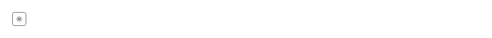

The one-button light/dark switch you drop in a navbar, header or settings row — click it and the whole app flips theme, and the choice survives a reload. Common asks it answers: "dark mode toggle", "theme toggle button", "light dark switcher", "toggle dark mode in Tailwind", "sun moon toggle", "dark mode without next-themes", "theme switcher for shadcn", "remember the user's theme", "respect the system theme". shadcn/ui has no installable toggle: its dark-mode guide hands you a next-themes provider to wire up and a dropdown to assemble yourself, so a plain button is written by hand every time. This is that button — one file, no provider, no context, no next-themes and no extra package. It toggles the `dark` class on the html element, which is exactly what Tailwind's class dark mode and the shadcn tokens already read, so it works with the theme you have rather than introducing another one. On first load it reads the saved choice from localStorage and falls back to the OS `prefers-color-scheme`, so a first-time visitor gets their system theme and a returning one gets their own; every later click writes the choice back. That first read happens in an effect rather than during render, because `window` does not exist on the server and an inline branch would either crash SSR or hydrate to different markup than it sent — which also means the theme is applied just after first paint, so add the usual one-line script in your document head if you need to kill the flash on a static page. The Sun/Moon swap is done with the `dark:` variant rather than JS state, so the icon matches the document even if something else on the page changes the theme. It is a real button that forwards every button prop (className, id, onClick, disabled), carries an aria-label and an aria-pressed that reflects the current mode, hides both icons from screen readers, and has a focus-visible ring; styling uses shadcn tokens (accent, muted-foreground, ring, border) so it matches your other icon buttons. lucide-react is the only dependency.

Rendered on the shadcn default neutral palette with harness-generated props.
pnpm dlx shadcn@4.21.0 add @pulld/theme-toggle
| licence | POINTER |
|---|---|
| primitive base | none |
| type | registry:ui |
| files | src/components/ui/theme-toggle.tsx |
| npm deps pulled | none beyond the pre-installed peer set |
| registry deps | — |
| semantic / palette / hex | 4 / 0 / 0 |
| writes shared ui/ | yes — can overwrite the project’s own primitives |